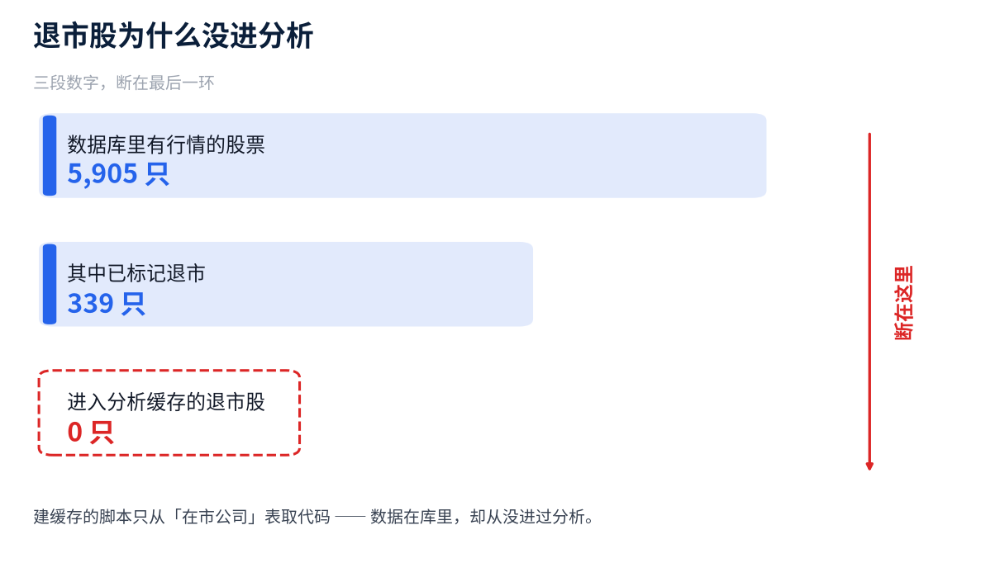
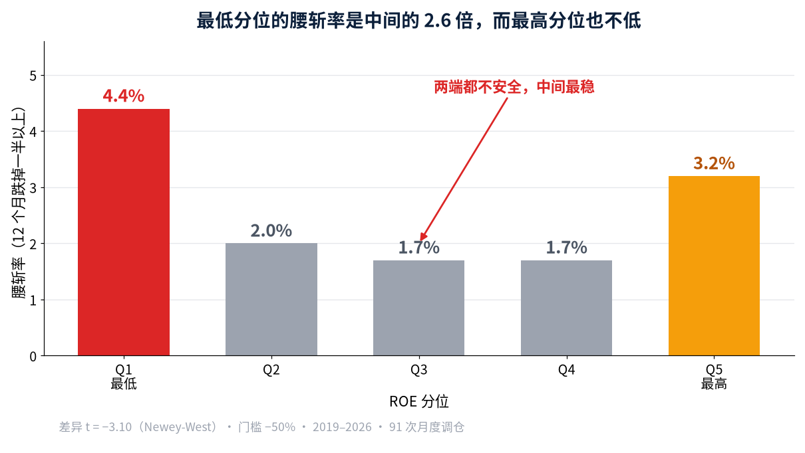
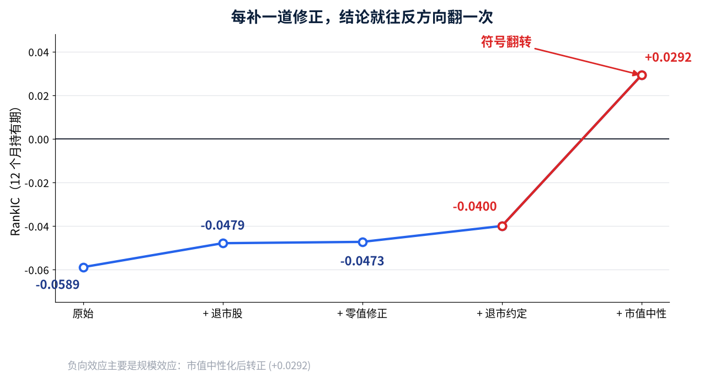

我拿 A 股全部股票的 ROE 做月度调仓。算 2019 年至今的 RankIC。
最好的持有期是 12 个月，RankIC = −0.059。
这个数字不算小。IC 的绝对值过 0.05，在 A 股已经能进候选池。
但我先做了一件事：给这份数据做全身检查。
检查有 10 项：复权连续性、涨跌幅越界、覆盖率缺口、存活偏差。
第一项就翻车了。
分析样本里 5,004 只股票，没有一只在区间中途消失。
正常的全市场样本，每年都有一批公司退市。一只都没有，只有一种解释。
这份面板里装的，全是活到今天的公司。
我去查了源头。库里其实有 339 只退市股，还专门做过入库核实。问题出在分析缓存：建缓存的脚本只从「在市公司」那张表里取代码。
数据在库里，却从来没进过分析。

建缓存时只从「在市公司」表取代码 —— 退市股从未进入分析样本
把 250 只退市股的行情与财务补进来。面板股票数从 5,066 只变成 5,316 只。
按常识，补上最差的公司，负向因子的信号应该更强。
实测相反：
| 持有期 | 补数据前 | 补数据后 |
|---|---|---|
| 12 个月 | −0.0589 | −0.0479 |
|RankIC| 弱了 20%。
为什么？我把退市股的收益一条条拆开看，找到了答案。
退市股在消失之前，确实在跌。但我算的是「未来 12 个月收益」。
一只股票如果 5 个月后退市，它根本没有未来 12 个月。
退市股最后 3 个调仓日，12 个月收益的实现率只有 14%。在市股是 86%。
长持有期下，退市股最惨的那一段，被清洗规则丢掉了。
留下来的，反而是还没走到尽头的那些。
问题的根子不在数据，在规则。
原来的规则是：拿不到期末价格就当缺失，直接删。
我改成 3 条：
第 2 条最容易被忽略。停牌 3 周和退市，在数据里长得一样，都是没有价格。
但一个是流动性问题，一个是终点。
口径修完，均值又弱了一点：−0.0473 掉到 −0.0400。
我还试过一个更保守的版本：在最后成交价上再打 30% 折扣。
结果几乎没变（−0.0400 对 −0.0395）。说明信号不是极值驱动的，这一点后面有用。
到这里，故事该结束了。它没有。
我不再只看均值，改看左尾：这个因子能不能预测腰斩。
门槛设成 −50%，也就是一年跌掉一半。各分位的命中率是这样：
| ROE 分位 | 腰斩率 |
|---|---|
| 最低（Q1） | 4.4% |
| Q2 | 2.0% |
| Q3 | 1.7% |
| Q4 | 1.7% |
| 最高（Q5） | 3.2% |
最低分位是中间那几档的 2.6 倍。差异的 t 值是 −3.10。
均值口径说「信号变弱了」，尾部口径说「低 ROE 更容易腰斩」。两个结论相反，而且同时成立。
机制在这里。RankIC 用 Spearman 秩相关，它度量的是全样本的成对单调性。
新补进来的退市股，几乎全挤在「ROE 最低 + 收益最差」那个角上。
它们彼此之间是同序对，会把相关系数往正方向拉。
所以秩相关对「灾难性下行」有结构性盲区。一堆挤在双低角的样本，反而会把 IC 拉高。
还有个细节：最高的那一档（Q5）是 3.2%，也高于中间。
两端都不安全，中间最稳。 这种非单调的形状，均值差和秩相关在原理上都表达不了。
有人会说：4.4% 和 1.7% 只差 2.7 个百分点，够看吗？
够不够不看差值大小，看它稳不稳。这要靠样本外，第 6 节说。

中间三档几乎持平、两端抬升 —— 这种非单调形态，均值差和秩相关在原理上都表达不了
还有一层没查：低 ROE 的股票，会不会同时是小市值？
小市值长期有超额收益，ROE 又偏低。两者一混，ROE 就会「看起来」是负向因子。
我把市值这个维度剥掉，再做一遍：
RankIC 从 −0.027 翻成 +0.038。符号反了。
再加上行业中性化，仍然是 +0.029。
原来的「ROE 是负向因子」，主要是规模效应。
而崩盘那一侧的结论，越控越强：
| 口径 | 腰斩率差异 t 值（12 个月） |
|---|---|
| 原始 | −3.10 |
| 市值中性 | −7.97 |
| 行业 + 市值中性 | −8.28 |
不是市值效应，也不是行业效应。控制完两层之后，它反而更清晰。
到这一步，我已经试过很多规格：持有期 4 个、退市约定 3 种、门槛 2 种。
试得越多，「找到规律」就越可能只是运气。 这是多重检验问题。
我做了两件事。
第一，把试过的每个假设记进台账。4 个持有期，就是 4 个假设。
这件事不能靠记性。研究者最常见的失误不是造假，是忘了自己试过多少个组合。
所以我把记账写成了代码：每跑一次假设检验就记一笔，校正时自动数出来。这套流程有开源实现，附录里说。
第二，用台账算显著门槛：Bonferroni 校正下，|t| 要超过 2.498 才算数，不是 1.96。
然后把规格冻结，拿后半段数据只验一次。
测试段结果：Q1 腰斩率 2.00%，Q5 是 0.28%，相差 7.1 倍。t = −3.32。
−3.32 的绝对值过了 2.498 的门槛，通过。
顺带说，12 个月那一档没通过。它在训练段 t 只有 −0.69，全样本那个 −3.10 是后半段撑起来的。
能站住的是 3 个月和 6 个月。
把所有修正做完，ROE 的最终画像是这样：
它更像一个风险指标，不是一个收益指标。剔除低 ROE 不带来超额收益，但能明显降低腰斩暴露。

同一份数据，五道修正；最后一步是市值中性化
这次全身检查留下 3 条方法论：
上面这套东西，我整理成了一个开源库：alphalens-cna。
它包含数据体检、带原因的清洗、退市收益约定、尾部统计、多重检验台账。定位是中国 A 股的 alphalens 替代品。
两个可以直接验的技术点：
pip install 可用数据都在，代码也都在，结论可以自己复算。如果你也遇到过「补了数据反而更不显著」这种事，欢迎留言聊聊。
觉得有用？点个关注，持续获取优质金融量化分析。